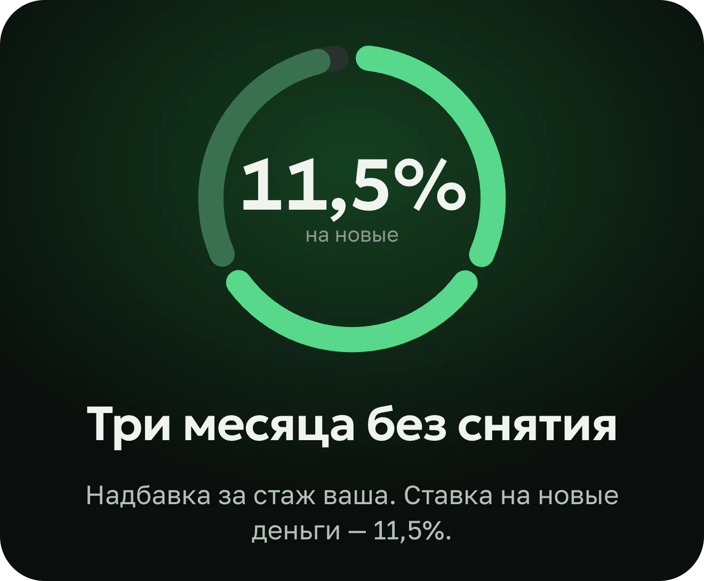
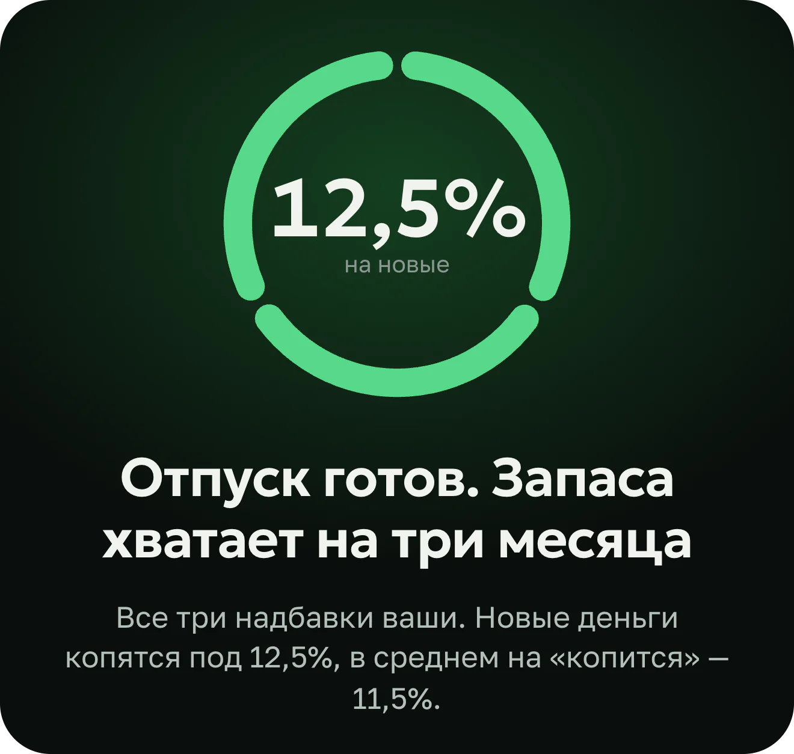

Стаж считается по месяцам без снятия. Через три месяца приходит вторая надбавка; третья — когда запаса хватает на три месяца.
К июню средняя ставка на «копится» выросла с 7,5% до 11,5%.
10 марта: надбавка за стаж

1 июня: все три надбавки

Крупные фрагменты кликабельного прототипа для iPhone 18 Pro Max. Суммы — пример.